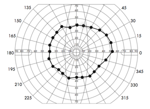

Description:
This element allows the input and display of a field of binocular single vision (BSV). Click the 'line of points' button to get started, then click on the diagram to add points. When finished, click the button again to finish adding points and to complete the line. Individual points can be deleted or moved. Additional points can be added to the end of the line by clicking the 'line of points' button again.
Comments may be added using the lable button.
Status: Alpha
Edit mode:
Display mode:

Steering Group:
Orthoptic